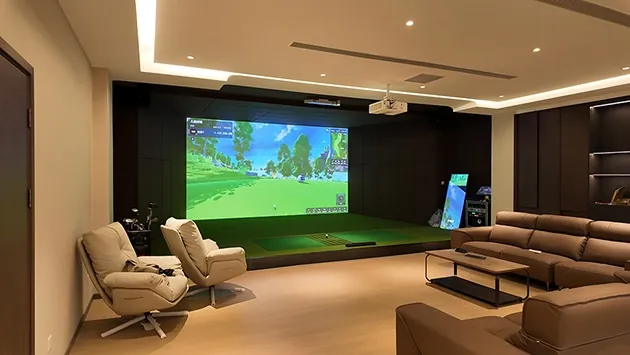

How much room does a golf simulator need?
Room requirements depend on the screen, equipment and players. PGM’s published standard references are 6.0 × 4.0 × 3.0 m for a single screen and 6.0 × 5.5 × 3.0 m for a curved screen, measured as depth × width × height.

Published PGM room-size references.
| Screen / reference | Depth | Width | Height | Condition |
|---|---|---|---|---|
| Single · minimum | 4.5 m / 14.8 ft | 3.0 m / 9.8 ft | 2.6 m / 8.5 ft | Without ball return |
| Single · standard | 6.0 m / 19.7 ft | 4.0 m / 13.1 ft | 3.0 m / 9.8 ft | Reference configuration |
| Single · optimal | 8.0 m / 26.2 ft | 5.2 m / 17.1 ft | 3.2 m / 10.5 ft | With lounge area |
| Curved · minimum | 5.0 m / 16.4 ft | 5.0 m / 16.4 ft | 2.6 m / 8.5 ft | Without ball return |
| Curved · standard | 6.0 m / 19.7 ft | 5.5 m / 18.0 ft | 3.0 m / 9.8 ft | Reference configuration |
| Curved · optimal | 8.0 m / 26.2 ft | 6.0 m / 19.7 ft | 3.2 m / 10.5 ft | With lounge area |
These are the configuration references published by PGM, not universal safe minimums. A 2.6 m ceiling reference does not mean every golfer can swing every club in that room. Confirm the player, equipment and full swing envelope before installation.
Dimensions: PGM simulator catalog (PDF, 19 MB), printed page 09 / PDF page 10. Ball-return and lounge-area notes: PGM’s published site requirements. Reviewed 11 November 2026. Dimensions are shown in metres and rounded feet.
Measure the usable room, not the estate-agent floor area.
Send three clear measurements.
- Depth: the usable front-to-back dimension, including the screen arrangement and the player’s space.
- Width: the clear side-to-side space, noting whether the hitting position must support both left- and right-handed players.
- Height: the clear height at the lowest beam, light fitting, duct or other obstruction.
Include photos and a sketch showing doors, windows, columns and fixed furniture. Identify which dimensions are finished and which may change during construction.
Check height at the lowest obstruction.
Ceiling height is only one part of swing clearance.
The club moves through a three-dimensional path. Player height, stance, handedness and club choice can change the space needed. A room that accommodates one person’s shorter club may not accommodate another person’s driver.
Check the complete motion around the intended hitting position and any nearby ceiling or wall obstruction with the installation team. Do not make a full-speed test swing in a room that has not been assessed for clearance.
Equipment has its own space requirements.
The screen, enclosure, sensor, projector, mounting hardware and optional ball return all affect the usable space. Review them as a single layout instead of choosing each item in isolation.
Commercial rooms need a separate circulation plan.
Seating, additional bays and customer movement sit outside the player’s required zone. Use a dimensioned venue layout rather than multiplying the minimum footprint.
Room-size questions.
What is PGM’s standard single-screen room reference?
The published standard reference is 6.0 m depth × 4.0 m width × 3.0 m height, approximately 19.7 × 13.1 × 9.8 ft. Confirm the final layout against the selected system and players.
Can I install a simulator with a 2.6 m ceiling?
PGM publishes 2.6 m as a height reference for certain minimum layouts without ball return. It is not approval for every player or club. The actual swing envelope and configuration must be assessed.
Is the minimum size suitable for both left- and right-handed golfers?
Do not assume so. Tell the team who will use the room so the hitting position, sensor arrangement and swing clearances can be reviewed for both sides.
How much space does a curved screen need?
PGM’s published curved-screen standard reference is 6.0 m depth × 5.5 m width × 3.0 m height. Screen geometry and equipment placement still require a configuration-specific plan.
What should I send for a room review?
Send clear width, depth and height with units, room photos, a sketch of obstructions, intended players, destination and whether the use is residential or commercial.
Have a room in mind?
Share the clear dimensions and any obstructions, along with your intended use. The PGM team can help you work through the configuration questions.
PGM is the company's own brand. This website is operated by 佛山市顺德异邦高尔夫用品有限公司.
Your details are used to respond to this inquiry. Please do not include sensitive personal information.